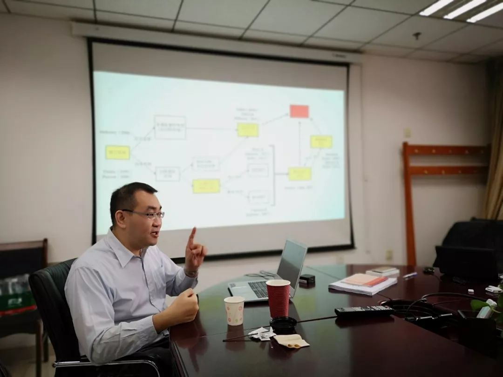
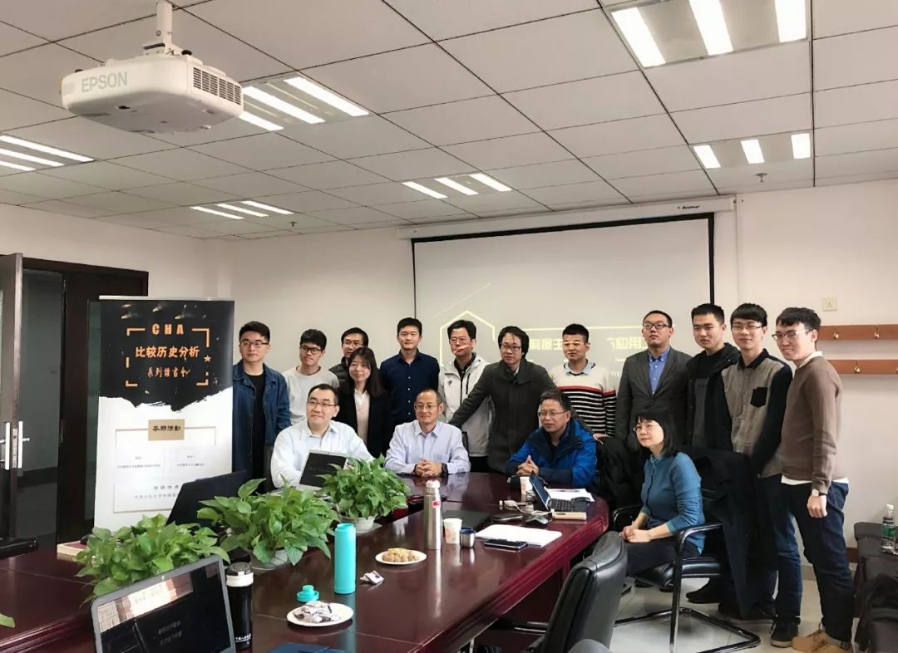

收录于合集
诗曰：“冻笔新诗懒写，寒炉美酒时温。醉看墨花月白，恍疑雪满前村。”不同于诗仙在初冬时惬意，第二届历史制度主义理论与应用工作坊在中国人民大学明德国际楼813会议室如火如荼地拉开帷幕。从晨光熹微至暮云合璧，持续了一天的讨论并没有丝毫减弱与会者的热情，这不仅源于大家对第二天零时“双十一”狂欢的摩拳擦掌，更在于，当仰望历史的星空时我们能够产生更加深邃的思索。
相较于一年前的首届工作坊参与者大多关注诸如户籍制度、保研制度、财政体制、产业政策等国内制度变迁，第二届的视野更多的聚焦于世界政治研究：除却立足时间性重思亨廷顿的现代国家建设理论与考察拉卜楞藏区的制度变迁外，其余四位作者的研究议题涉及广大发展中国家，分别为缅甸的民主化改革、菲律宾地主与民主的关系、博兹瓦纳的政治奇迹以及墨西哥的暴力社会。关注世界政治显然有利于开拓视野，然而这必然要会遇到不少“老生常谈”却十分重要的问题。例如黄晨老师在评论鲍志鹏同学的《关键节点、权力、观念：缅甸民主化的历史制度主义分析》时就强调材料使用及其可信度的问题，认为在后期研究中应该梳理以行动者为代表的更加微观层面的材料，同时利用中介变量如出版、传播史的材料来呈现观念的变化。作为人大政治学最优秀的毕业生之一，黄晨老师建立在本国研究基础上的知识社会学分析十分严谨考究。这进而引出一个问题，比较政治研究的学者如何在能对非本国研究形成自信。事实上，鲍兄能掌握汉蒙英缅四种语言已经殊为不易。面对这个问题，最通俗的回答是“有多少米煮多少饭”。虽然我们没有斯考切波、戈德斯通那样在不会中文的情况下对自己著作中涉及中国案例依旧自信——事实上摩尔曾说过，自己在不会中文的情况下写了中国，以后的研究者不能再这样做了——但是我们不能因为自身不懂外文而忽视对世界的认知，在既有的条件下努力做到最好即可。
历史制度主义研究需要限定时间段，但赵德昊同学的疑惑是研究生面临的一个难题在于如何处理历史与社会科学的关系。马得勇老师认为历史制度主义研究历史不是为了还原历史，也不是为了预测未来，而是为了更好地理解历史，尽量避免显而易见的失误。黄晨老师则认为社会科学是为了得出机制和解释，对于史料和理论之间的取舍见仁见智。黄宗昊老师认为社会科学重在解释历史，这往往被历史学研究视为过大的野心……很显然，一个保险的方式是关注那些自己成长或生活过的地方。虽然是湖南人，但骆岭楠同学对寄托了四年美好青春回忆的甘肃省情有独钟。他利用关键节点和制度再生产等分析工具梳理了甘肃拉卜楞藏区民族区域自治制度的建立过程，认为作为非正式制度的宗教和习俗在博弈过程中起着关键作用，在每一次的国家进场中，非正式制度都是以护卫自身利益为基础的，都是企图保存原有的权力结构的。然而，他面对的点评老师却是土生土长的甘肃人。马得勇老师敏锐地指出，政治学的权力分析并不是一个“博弈”的过程，确切地说，是一个互动或者斗争的过程。
骆岭楠、鲍志鹏使用了历史关节点分析框架，这个分析方式本身经过历代学者的完善已经臻于成熟，而释启鹏、何家丞所使用的概念与机制也是普遍存在且基本达成共识的，因此他们需要做的是将逻辑更加自洽、资料更加详实。然而赵德昊同学却要面临更多的挑战，他是在用一个新的分析框架分析一个旧的（即存在很多竞争性解释）问题，因此他不仅要回应既有实证研究的质疑（例如有些人认为Matthew Lange的殖民统治-国家能力-发展水平的分析框架更为合理），也要回应分析框架本身的质疑（有些人认为体制吸纳的整合、扩容、新建、限制等四种形式有些结构- 功能主义的味道）——双重介入为作者提出了更高的挑战，这种风险也很可能获得更大的成功。
杨端程同学从亨廷顿的政治发展理论出发展开对时间性与现代国家建设的思考，他认为在亨廷顿《变化社会中的政治秩序》首版50周年的今天，其提出的按照“权威—秩序—发展”的逻辑不仅推动我们重新思考现代国家建设中的“时间性”与“反应序列”问题，也从比较- 历史分析的角度激发我们对作为权威和制度的强国家、国家能力以及政治合法性的反思。诚然，时至今日，从伊斯顿到亨廷顿，“两顿”对几代中国政治学人的影响自不必多言。作为理论性的反思，杨端程发言表现出更多的弥散性，但是在博兹瓦纳问题上他的结论则直截且悲观：非洲发展艰难。这对于钟爱自己研究案例、甚至想实地考察的赵德昊来说是不能容忍的，他认为在非洲普遍糟糕的情况下，博兹瓦纳已经实属难得。释启鹏则反对这一观点，为此他补充道：一个人均GDP低于东三省的国家，艾滋病却在全球数一数二的国家，要这奇迹有何用？这里涉及到如何看待那些所谓的“奇迹”，如非洲的博兹瓦纳和毛里求斯、拉美的哥斯达黎加和智利等等。这里我们不去展开，但是值得注意的是，五十年前的墨西哥与菲律宾、一百年前的阿根廷，它们又何尝不曾被给予殷切期望？

似乎讲了这么多，我们还没有向大家展示到底什么是“历史制度主义”。西伦与斯坦莫（1992）在宣言式的文献中认为，历史制度主义代表了这样一种企图，即阐述政治斗争是如何它们所得以在其中展开的制度背景的调节和塑造的；皮尔逊与斯考切波（2000）给出了三个特征，包括“集中关注重大结果和复杂难题”、“严格地用宏观背景来分析社会或政治过程所得以展开的中观和微观层面上的组织构造”和“以追求这些历时性进程之轨迹的方式来提出解释”；而2016年出版的《牛津历史制度主义手册》则体现为如下定义：Historical institutionalism is a research tradition that examines how temporal processes and events influence the origin and transformation of institutions that govern political and economic relations。在这些定义中不难看出，虽然历史制度主义关注的重点依旧是制度，但是对制度发挥作用的却是时间中的进程与事件。正如黄宗昊老师在对学科史的详细考察后得出的结论：历史制度主义关注的重点，历经了自“历史”至“制度”再至“历史”的流变。当然由于时间限制，黄老师并没有进一步说明这一转变的原因。在我们看来，这无疑是学术环境的变化。在新制度主义兴起的浪潮中，历史制度主义抨击了结构- 功能主义包容一切的政治体系原则，同时为了实现对追求普遍化的马克思主义、国家中心主义关注点的下沉，推动了从宏观结构向中观制度转变；而从制度再到历史的转化，则是源于方法论革命的冲击，定性研究者重新拾起了“历史”（确切地说是“时间”）以回应KKV以来的各种诘难。近期历史制度主义格外繁荣兴盛，但是其副作用就是文献庞杂不易掌握，黄老师以一张逻辑清晰的图展示了历史制度主义的发展历程，他将历史制度主义视为一个有“历史”和“制度”两个维度共识的学派：历史维度在经验上来自真实历史的问题意识，分析上来自对于时间性、整体性和脉络性的把握；制度则是历史分析的载体。而历史制度主义对于历史的解释可以概括为如下几个分析特征：首先是整体图景，其次是关注How的问题，最后是权力分析。

制度是指“在政治和经济各领域形塑个人之间关系的正式或非正式规则、顺从程序和标准化的惯例”（霍尔，2008）。然而新制度主义只是一种潮流而不是某种方法，这一点已经得到了与会者的共识。毕竟历史制度主义、社会学制度主义与理性选择制度主义三者之间属于“大异小同”，因此“新制度主义视角下的xxx研究”或“本文以新制度主义为研究方法”在大家看来显然是门外汉了。与此同时，大家似乎也不太认同话语制度主义等新兴流派，认为他们完全没有必要扣上“制度主义”的帽子。而对于历史制度主义的认知，很多学者是以“制度”为核心出发的，这一点在下午的讨论中十分明显：何家丞同学认为制度的生命源于权力，并概括了权力与制度变迁的四种关系，同时认为关注时间和行动者有助于把握多重逻辑中的制度变迁。董彦峰同学围绕“观念”提出了一系列问题：制度属性、分层和评价标准如何确定？观念如何发挥作用？与制度如何互动？如何处理制度与民情之间的张力问题？蒋尊泽同学关注的是制度互补性问题，认为制度的变化可能源于与其他制度的运行有着千丝万缕的联系，因而需要关注制度中不同逻辑的互补性与制度间的不平衡性。马得勇老师则围绕制度匹配、正式制度与非正式制度之间的关系等问题与同学们展开对话。然而作为近乎偏执的捍卫者（他从来不屑于空谈“两种传承”优势互补式的“和稀泥”论调），释启鹏同学自然无法忍受大家在讨论历史制度主义的时候只讨论制度而忽视了时间性与因果性，因此他迫不及待地重申定性研究的科学性所在。他利用韦恩图向大家展示了“原因”（cause）的几种类型以及序列中原因重要性的判定方法，进而展现出基于历史的因果解释是如何在逻辑学与集合论的视角下实现科学的。为此，黄晨老师提出了不妨从哲学写作中获取灵感的建议，他感叹很多富有想象力的思考如今很难跨越学科壁垒了。
但若过分追求因果性则难免匠气十足，因此历史制度主义同样关切对“我们身处其中的社会结构的理解提供实质性启示”，于是就产生了诸如对菲律宾地主与民主的再思考以及市场化与民主化对墨西哥社会的非预期后果。郑文换老师从另一个方面提出自己的看法，她认为即便墨西哥案例基本实现了因果逻辑自洽，但是其间许多历史细节与因果机制并没有完全展现，许多竞争性解释并没有很好地予以回应。因此社会学秉持的细致思考是那些追求“大结构大过程大比较”的学者们应该予以重视的。刘庆乐老师也提到了阶级划分以及阶级互动等问题，这表明即便是我们习以为常的概念，在社会科学研究过程中也需要更加严谨地予以看待。
犹记得黄宗昊老师动情地说，当年编著Structuring Politics的那群年轻学者，如今已经成为名动江湖的旗手；于我们而言，未来亦可期。作为两位发起人，黄宗昊老师与马得勇老师为此倾注了很多心血，黄老师不辞辛苦地往返于京沪两地，马得勇老师也总是慷慨地拿出陈年佳酿以尽地主之谊。感谢刘庆乐老师、郑文换老师和黄晨老师等师长拔冗参加，同时感谢来自牛津大学、北京大学、吉林大学、中央财经大学、中央民族大学以及中国人民大学等高校的同学们热情参与。值得一提的是，本次工作坊得到了中国人民大学国际关系学院的大力支持：杨光斌老师是历史制度主义研究的先行者与实践者，他对“政文观止Poliview”联合“历史制度主义研究”发起的工作坊、读书会等系列活动表示了极大的认可；韩冬临老师利用学院的“政治科学前沿与方法工作坊”为本次活动提供了极大的支持，政治科学研究的光辉从未因“两种传承”的分野而黯淡。
历史制度主义工作坊已经走过了第二年，这份坚守也定将继续。今年花胜去年红，更待明年花更好，携与君同。

撰稿：何家丞、释启鹏
编辑：吴温泉
审读：杨端程


“广告点一点，也是支持学术公益 ”
”
政文观止
微信扫一扫赞赏作者 __赞赏
已喜欢，对作者说句悄悄话
取消 __
发送给作者
发送
最多40字，当前共字
上一页 1/3 下一页
长按二维码向我转账
受苹果公司新规定影响，微信 iOS 版的赞赏功能被关闭，可通过二维码转账支持公众号。